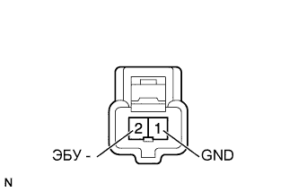

ПРЕДАВАРИЙНАЯ СИСТЕМА БЕЗОПАСНОСТИ > Цепь выключателя отмены предаварийного включения тормозов |
| 1.СНИМИТЕ ПОКАЗАНИЯ ПОРТАТИВНОГО ДИАГНОСТИЧЕСКОГО ПРИБОРА |
Используя режим Data List, убедитесь, что выключатель отмены предаварийного включения тормозов функционирует надлежащим образом (Нажмите здесь).
| Информация на дисплее прибора | Измеряемая величина / диапазон измерения | Нормальное состояние | Замечание по диагностике |
| Pre-Crash Brake OFF Switch | Сигнал выключателя отмены предаварийного включения тормозов / ON (ВКЛ) или OFF (ВЫКЛ) | ON (ВКЛ): выключатель отмены предаварийного включения тормозов во включенном состоянии OFF (ВЫКЛ): выключатель отмены предаварийного включения тормозов в выключенном состоянии | - |
|
| ||||
| OK | ||
| ||
| 2.ПРОВЕРЬТЕ ВЫКЛЮЧАТЕЛЬ ОТМЕНЫ ПРЕДАВАРИЙНОГО ВКЛЮЧЕНИЯ ТОРМОЗОВ |
|  |
Снимите выключатель отмены предаварийного включения тормозов выключен (Нажмите здесь).
Измерьте сопротивление в соответствии со значениями, приведенными в таблице ниже.
| Контакты для подключения диагностического прибора | Положение переключателя | Заданные условия |
| 1 (GND) - 2 (ECU) | Нажат | Менее 1 Ом |
| Не нажат | 10 кОм или более |
|
| ||||
| OK | |
| 3.ПРОВЕРЬТЕ ЖГУТ ПРОВОДОВ И РАЗЪЕМ (ВЫКЛЮЧАТЕЛЬ ОТМЕНЫ ПРЕДАВАРИЙНОГО ВКЛЮЧЕНИЯ ТОРМОЗОВ – ЭБУ ПОМОЩИ ПРИ ДВИЖЕНИИ) |
Отсоедините разъем выключателя G121.
Отсоедините разъем G119 ЭБУ.
Измерьте сопротивление в соответствии со значениями, приведенными в таблице ниже.
| Контакты для подключения диагностического прибора | Условие | Заданные условия |
| G121-2 (ECU) - G119-5 (PBSW) | Всегда | Менее 1 Ом |
| G121-1 (GND) - масса | ||
| G121-2 (ECU) - масса | Всегда | 10 кОм или более |
|
| ||||
| OK | ||
| ||